hi
housekeeping/shoutouts
@awinston
@darwinbondgraha
@onekade
@sarah_brayne
@saralibby
so many other really good reporters and researchers
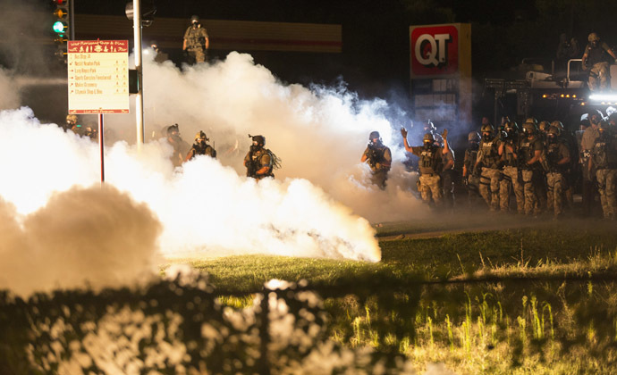
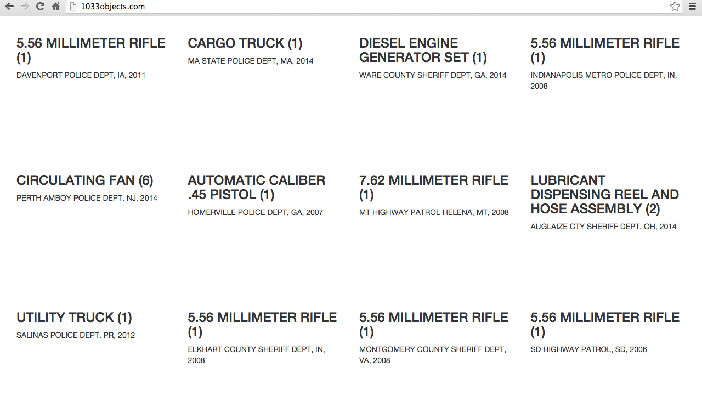
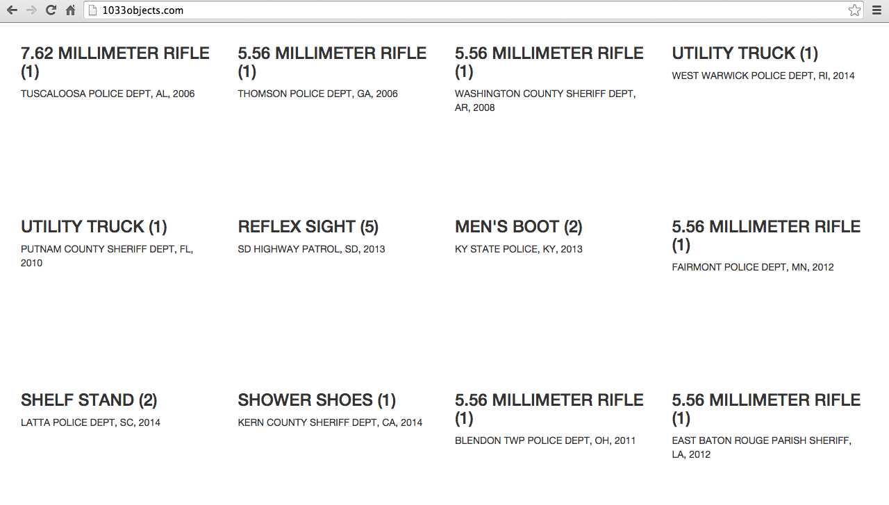
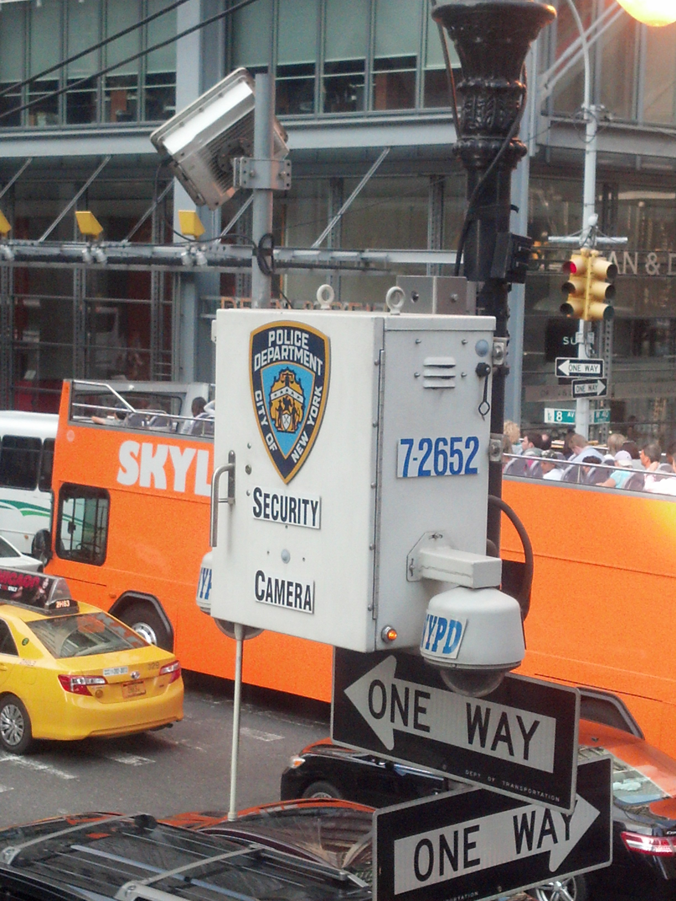
that being said
cops don't need algorithms
to murder with impunity
they already do it all the fucking time
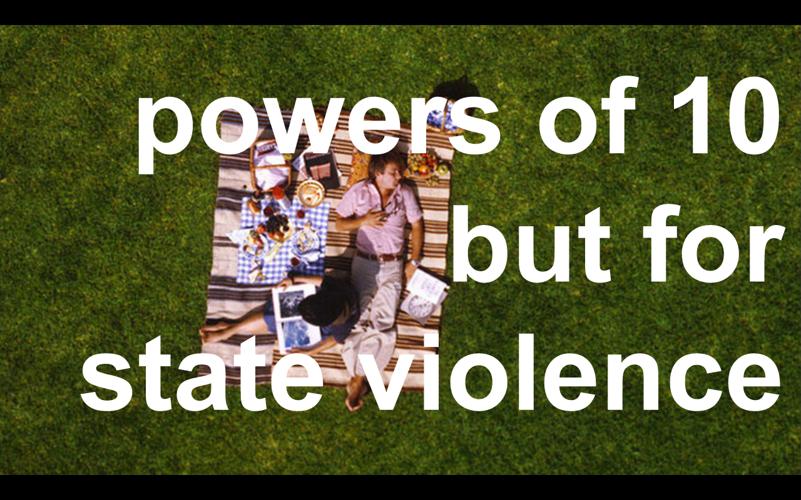
net-centric warfare
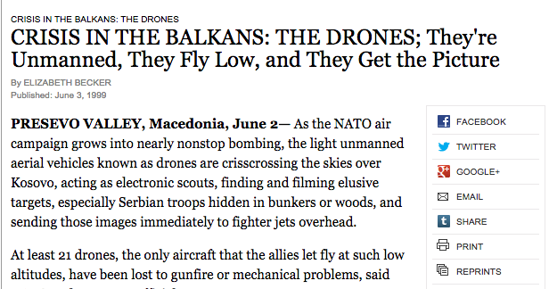
post-9/11:
disconnectedness defines danger
"If you are fighting globalization, if you reject the rules, if you reject connectivity, you are probably going to be of interest to the United States Department of Defense."
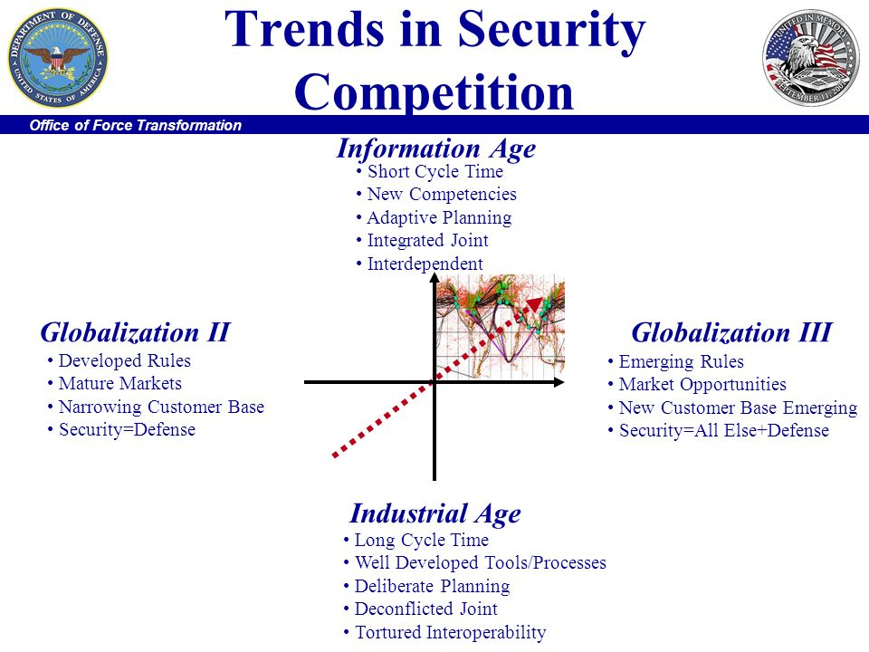
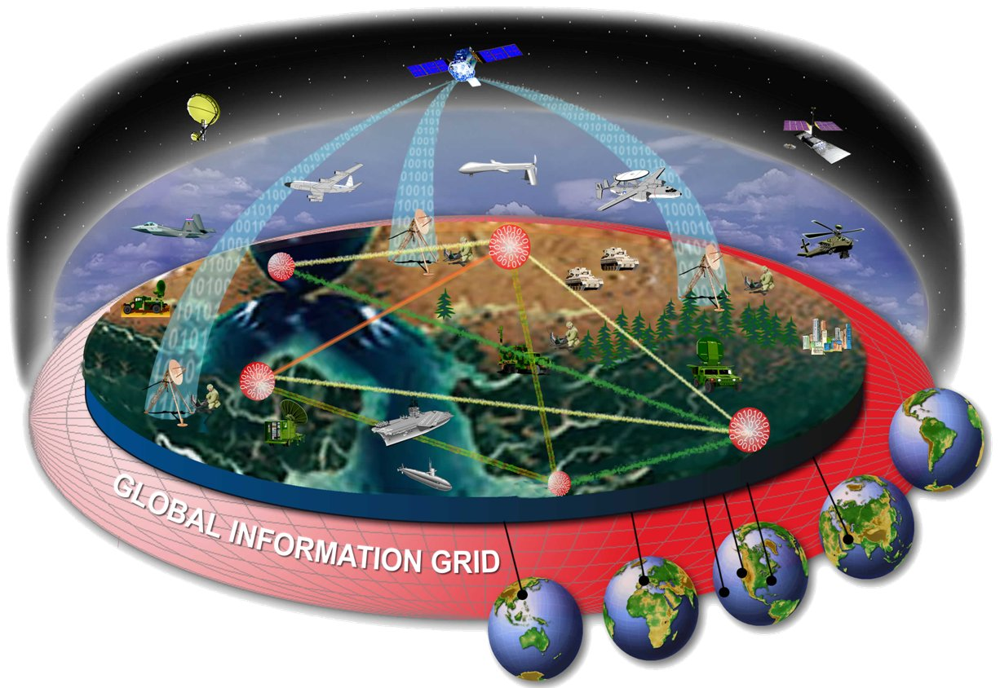
"Our Command & Control Networks are truly being transformed into a WEAPON SYSTEM as they get leveraged more and more by our soldiers – and as such, need to be protected from the increasing focus and efforts of our enemies to attack them using any & all means…"
cyber war as self-fulfilling prophecy
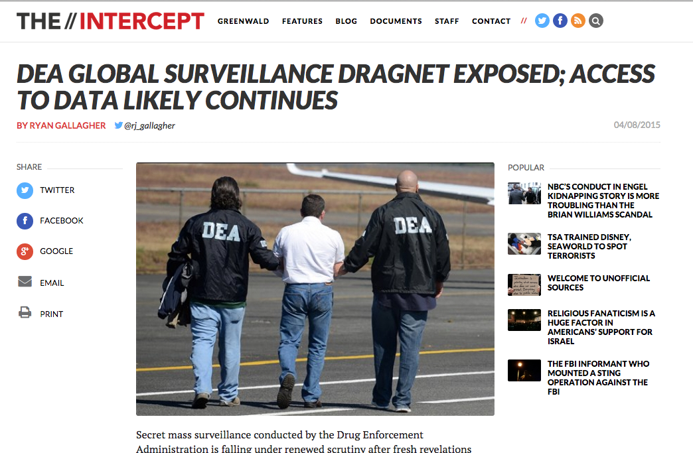
making the map into the territory
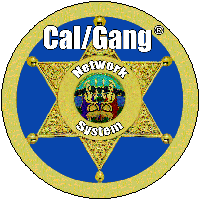
Subject has admitted to being a gang member.
Subject has been arrested with known gang members for offenses consistent with gang activity.
Subject has been identified as a gang member by a reliable informant/source.
Subject has been identified as a gang member by an untested informant.
Subject has been seen affiliating with documented gang members.
Subject has been seen displaying gang symbols and/or hand signs.
Subject has been seen frequenting gang areas.
Subject has been seen wearing gang dress.
Subject is known to have gang tattoos.
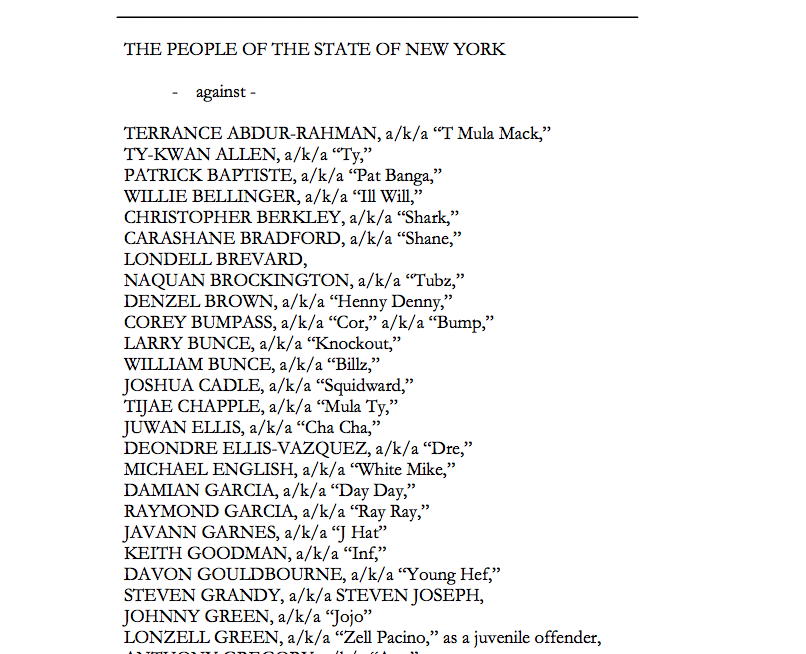
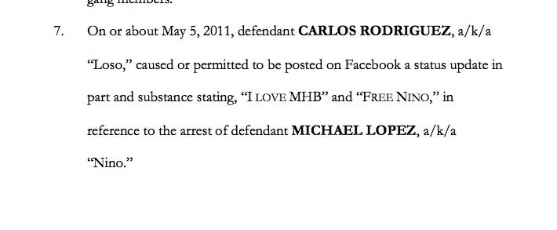
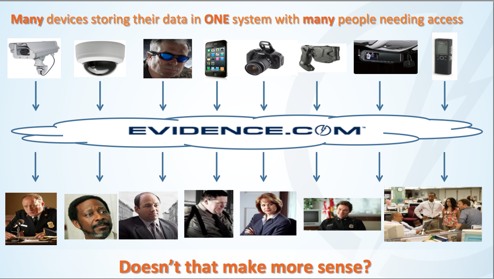
the plausible deniability of best intentions
maybe you know all this
ideology necessitates infrastructure
infrastructures are encoded with and reinforce ideology
go in search of things designed to be ignored
thanks!